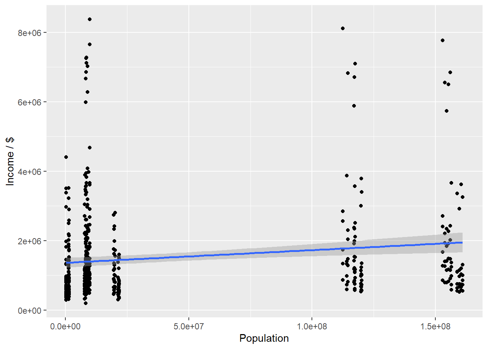

Here we provide a detailed analysis using more sophisticated statistics techniques.
This comes from the file analysis.qmd.
We describe here our detailed data analysis. This page will provide an overview of what questions you addressed, illustrations of relevant aspects of the data with tables and figures, and a statistical model that attempts to answer part of the question. You’ll also reflect on next steps and further analysis.
The audience for this page is someone like your class mates, so you can expect that they have some level of statistical and quantitative sophistication and understand ideas like linear and logistic regression, coefficients, confidence intervals, overfitting, etc.
While the exact number of figures and tables will vary and depend on your analysis, you should target around 5 to 6. An overly long analysis could lead to losing points. If you want you can link back to your blog posts or create separate pages with more details.
The style of this paper should aim to be that of an academic paper. I don’t expect this to be of publication quality but you should keep that aim in mind. Avoid using “we” too frequently, for example “We also found that …”. Describe your methodology and your findings but don’t describe your whole process.
I am showing all the codes and the result of them just so you can read it directly from the site. After other things are finished, I will make sure those won’t be visible. This part of text shall be deleted just like instructions from the professor Other plots and explanations shall be added here. Underneath are some new plots to work with.
library(tidyverse)
── Attaching core tidyverse packages ──────────────────────── tidyverse 2.0.0 ──
✔ dplyr 1.1.4 ✔ readr 2.1.5
✔ forcats 1.0.0 ✔ stringr 1.5.1
✔ ggplot2 3.5.1 ✔ tibble 3.2.1
✔ lubridate 1.9.4 ✔ tidyr 1.3.1
✔ purrr 1.0.2
── Conflicts ────────────────────────────────────────── tidyverse_conflicts() ──
✖ dplyr::filter() masks stats::filter()
✖ dplyr::lag() masks stats::lag()
ℹ Use the conflicted package (<http://conflicted.r-lib.org/>) to force all conflicts to become errors
library(ggplot2)library(gridExtra)
载入程序包：'gridExtra'
The following object is masked from 'package:dplyr':
combine
data <-readRDS(here::here("dataset/cleaned_data_W_revenue_combined.rds"))temp <- data |>mutate(average_income = PAYANN / EMP *1000) |>filter( NAICS2017_LABEL =="Total for all sectors", ETH_GROUP_LABEL =="Total", SEX_LABEL %in%c("Male", "Female"), VET_GROUP_LABEL =="Total" )ml <-lm(average_income ~ Population + SEX_LABEL, temp)summary(ml)
Call:
lm(formula = average_income ~ Population + SEX_LABEL, data = temp)
Residuals:
Min 1Q Median 3Q Max
-20797 -5483 -951 5017 46505
Coefficients:
Estimate Std. Error t value Pr(>|t|)
(Intercept) 3.315e+04 5.657e+02 58.59 < 2e-16 ***
Population 3.253e-05 6.342e-06 5.13 4.12e-07 ***
SEX_LABELMale 7.673e+03 7.033e+02 10.91 < 2e-16 ***
---
Signif. codes: 0 '***' 0.001 '**' 0.01 '*' 0.05 '.' 0.1 ' ' 1
Residual standard error: 7980 on 513 degrees of freedom
Multiple R-squared: 0.2171, Adjusted R-squared: 0.214
F-statistic: 71.11 on 2 and 513 DF, p-value: < 2.2e-16
# VETERAN Group is also checked in the model, # but didn't show enough significance to be considered# On the other hand, it makes it fair to say # They are not getting the care they deserve.# Since the other variables are non-relevant to the topic# They are either partially ignored or just kept# to add some diversity to the data.# From the summary, both coefficient are positive and significant# which means the people who belong to a more major race# have a higher chance to get a better income# as well as that for male.# The plot below basically says the same thing.
ggplot(temp) +geom_point(aes(y = average_income, x = Population)) +geom_smooth(aes(y = average_income, x = Population), method ="lm") +ylab("Income / $")
[[1]]
Call:
lm(formula = average_income ~ Population + SEX_LABEL, data = temp)
Residuals:
Min 1Q Median 3Q Max
-22772 -5079 -962 3854 55196
Coefficients:
Estimate Std. Error t value Pr(>|t|)
(Intercept) 3.181e+04 7.537e+02 42.202 <2e-16 ***
Population 4.303e-06 7.851e-06 0.548 0.584
SEX_LABELMale 1.272e+04 9.169e+02 13.869 <2e-16 ***
---
Signif. codes: 0 '***' 0.001 '**' 0.01 '*' 0.05 '.' 0.1 ' ' 1
Residual standard error: 9424 on 420 degrees of freedom
Multiple R-squared: 0.3142, Adjusted R-squared: 0.3109
F-statistic: 96.2 on 2 and 420 DF, p-value: < 2.2e-16
[[2]]
Call:
lm(formula = average_income ~ Population + SEX_LABEL, data = temp)
Residuals:
Min 1Q Median 3Q Max
-14045 -4930 -1159 3355 66775
Coefficients:
Estimate Std. Error t value Pr(>|t|)
(Intercept) 2.682e+04 6.931e+02 38.700 < 2e-16 ***
Population 1.544e-05 6.847e-06 2.254 0.0247 *
SEX_LABELMale 5.702e+03 8.189e+02 6.963 1.38e-11 ***
---
Signif. codes: 0 '***' 0.001 '**' 0.01 '*' 0.05 '.' 0.1 ' ' 1
Residual standard error: 8160 on 398 degrees of freedom
Multiple R-squared: 0.1156, Adjusted R-squared: 0.1111
F-statistic: 26 on 2 and 398 DF, p-value: 2.431e-11
[[3]]
Call:
lm(formula = average_income ~ Population + SEX_LABEL, data = temp)
Residuals:
Min 1Q Median 3Q Max
-22142 -6747 -2519 3588 157016
Coefficients:
Estimate Std. Error t value Pr(>|t|)
(Intercept) 3.872e+04 1.311e+03 29.527 <2e-16 ***
Population -8.073e-06 1.268e-05 -0.637 0.525
SEX_LABELMale -1.760e+03 1.533e+03 -1.148 0.252
---
Signif. codes: 0 '***' 0.001 '**' 0.01 '*' 0.05 '.' 0.1 ' ' 1
Residual standard error: 15020 on 385 degrees of freedom
Multiple R-squared: 0.004225, Adjusted R-squared: -0.0009481
F-statistic: 0.8167 on 2 and 385 DF, p-value: 0.4426
[[4]]
Call:
lm(formula = average_income ~ Population + SEX_LABEL, data = temp)
Residuals:
Min 1Q Median 3Q Max
-7182.6 -2527.8 -970.6 1745.7 27566.4
Coefficients:
Estimate Std. Error t value Pr(>|t|)
(Intercept) 1.953e+04 3.340e+02 58.457 <2e-16 ***
Population -1.532e-07 3.284e-06 -0.047 0.963
SEX_LABELMale -2.181e+02 3.949e+02 -0.552 0.581
---
Signif. codes: 0 '***' 0.001 '**' 0.01 '*' 0.05 '.' 0.1 ' ' 1
Residual standard error: 3881 on 386 degrees of freedom
Multiple R-squared: 0.0007904, Adjusted R-squared: -0.004387
F-statistic: 0.1527 on 2 and 386 DF, p-value: 0.8585
[[5]]
Call:
lm(formula = average_income ~ Population + SEX_LABEL, data = temp)
Residuals:
Min 1Q Median 3Q Max
-26357 -4702 -733 4293 80206
Coefficients:
Estimate Std. Error t value Pr(>|t|)
(Intercept) 4.047e+04 7.100e+02 56.996 < 2e-16 ***
Population 2.307e-05 7.437e-06 3.102 0.00204 **
SEX_LABELMale 6.514e+03 8.623e+02 7.555 2.39e-13 ***
---
Signif. codes: 0 '***' 0.001 '**' 0.01 '*' 0.05 '.' 0.1 ' ' 1
Residual standard error: 9126 on 447 degrees of freedom
Multiple R-squared: 0.127, Adjusted R-squared: 0.1231
F-statistic: 32.51 on 2 and 447 DF, p-value: 6.568e-14
[[6]]
Call:
lm(formula = average_income ~ Population + SEX_LABEL, data = temp)
Residuals:
Min 1Q Median 3Q Max
-44604 -8284 -1790 6784 373605
Coefficients:
Estimate Std. Error t value Pr(>|t|)
(Intercept) 6.185e+04 1.689e+03 36.617 < 2e-16 ***
Population -1.148e-06 1.791e-05 -0.064 0.949
SEX_LABELMale 1.456e+04 2.040e+03 7.137 3.6e-12 ***
---
Signif. codes: 0 '***' 0.001 '**' 0.01 '*' 0.05 '.' 0.1 ' ' 1
Residual standard error: 22190 on 474 degrees of freedom
Multiple R-squared: 0.09736, Adjusted R-squared: 0.09355
F-statistic: 25.56 on 2 and 474 DF, p-value: 2.862e-11
# Here's an deeper look into each industry and their income for people # The six categories with most employees are chosen in this case.# In most of them, Male employees are still getting more money excluding # <Administrative and support and waste management and remediation services> and# <Accommodation and food services>, which is kind of fair when looking at. # However, only two industries can see some preference for offering# higher wage for major race, which are <retail trade> and <manufacturing># I will stop analyzing here, since these are just some basic info.# But when you guys are writing analysis, there should be a lot to be able to # talk about in this part I guess? This really seem like something you can really# expand on easily.# Underneath is also a plot of those categories to go with the topic, good luck!
`geom_smooth()` using formula = 'y ~ x'
`geom_smooth()` using formula = 'y ~ x'
`geom_smooth()` using formula = 'y ~ x'
`geom_smooth()` using formula = 'y ~ x'
`geom_smooth()` using formula = 'y ~ x'
`geom_smooth()` using formula = 'y ~ x'
data |>mutate(average_income = PAYANN / EMP *1000) |>filter(VET_GROUP_LABEL =="Total", NAICS2017_LABEL =="Total for all sectors", ETH_GROUP_LABEL =="Total", SEX_LABEL =="Total") |>subset(select =c(average_income, YEAR, RACE_GROUP_LABEL, YIBSZFI_LABEL)) |>group_by(RACE_GROUP_LABEL) |>filter(RACE_GROUP_LABEL %in%c("Nonminority", "Minority", "Equally minority/nonminority")) |>filter(YIBSZFI_LABEL %in%c("Firms with less than 2 years in business", "Firms with 16 or more years in business","Firms with 4 to 5 years in business")) |>ggplot() +geom_line(aes(x = YEAR, y = average_income, color = RACE_GROUP_LABEL, linetype = YIBSZFI_LABEL)) +labs(color ='Race category', linetype ="Years in business") +ylab("Average income / $")
# Some reused code from blog post 7, showing how minority and majority races' income have changed in years# for older, younger and in the middle companies.
# A tibble: 2 × 18
NAICS2017_LABEL SEX_LABEL ETH_GROUP_LABEL RACE_GROUP_LABEL VET_GROUP_LABEL
<fct> <fct> <fct> <fct> <fct>
1 Management of comp… Total Equally Hispan… Total Equally vetera…
2 Management of comp… Total Total Equally minorit… Equally vetera…
# ℹ 13 more variables: YIBSZFI_LABEL <chr>, YEAR <dbl>, FIRMPDEMP <dbl>,
# RCPPDEMP <dbl>, EMP <dbl>, PAYANN <dbl>, FIRMPDEMP_S <dbl>,
# RCPPDEMP_S <dbl>, EMP_S <dbl>, PAYANN_S <dbl>, Population <dbl>,
# revenue <dbl>, income <dbl>
m <-lm(income ~ revenue, df)summary(m)
Call:
lm(formula = income ~ revenue, data = df)
Residuals:
Min 1Q Median 3Q Max
-80549 -11366 -2997 5822 214865
Coefficients:
Estimate Std. Error t value Pr(>|t|)
(Intercept) 3.838e+04 6.688e+02 57.390 <2e-16 ***
revenue 1.595e-03 1.645e-04 9.697 <2e-16 ***
---
Signif. codes: 0 '***' 0.001 '**' 0.01 '*' 0.05 '.' 0.1 ' ' 1
Residual standard error: 19960 on 1097 degrees of freedom
Multiple R-squared: 0.07895, Adjusted R-squared: 0.07811
F-statistic: 94.03 on 1 and 1097 DF, p-value: < 2.2e-16
ggplot(df) +geom_point(aes(x = revenue, y = income)) +geom_smooth(aes(x = revenue, y = income), method ="lm", se =FALSE, color ="red") +geom_smooth(aes(x = revenue, y = income), color ="blue", linetype ="dashed",method ="loess", formula = y ~ x)
`geom_smooth()` using formula = 'y ~ x'
# So this part is basically another story. This is a plot of the revenue VS# income. It's pretty obvious there's a relation between them.
df <- temp |>filter( NAICS2017_LABEL =="Total for all sectors", ETH_GROUP_LABEL =="Total", SEX_LABEL %in%c("Male", "Female"), VET_GROUP_LABEL =="Total" )ml <-lm(revenue ~ Population + SEX_LABEL, df)summary(ml)
Call:
lm(formula = revenue ~ Population + SEX_LABEL, data = df)
Residuals:
Min 1Q Median 3Q Max
-1617664 -691414 -327644 151929 6558517
Coefficients:
Estimate Std. Error t value Pr(>|t|)
(Intercept) 9.056e+05 9.165e+04 9.881 < 2e-16 ***
Population 3.856e-03 1.028e-03 3.752 0.000195 ***
SEX_LABELMale 8.722e+05 1.139e+05 7.655 9.68e-14 ***
---
Signif. codes: 0 '***' 0.001 '**' 0.01 '*' 0.05 '.' 0.1 ' ' 1
Residual standard error: 1293000 on 513 degrees of freedom
Multiple R-squared: 0.1217, Adjusted R-squared: 0.1183
F-statistic: 35.54 on 2 and 513 DF, p-value: 3.518e-15
# Basically the same thing but on average revenue instead of # income. All are pretty significant which is good, in a way that# it proves the point
ggplot(df) +geom_point(aes(y = revenue, x = Population)) +geom_smooth(aes(y = revenue, x = Population), method ="lm") +ylab("Income / $")
`geom_smooth()` using formula = 'y ~ x'

# same thing with that graph, just with revenue.# I guess it does say that minority races are also getting# less revenue, which can be partially seen as less income and less revenue is # associated. # I don't think we need to go that deep like the previous income one,# but it's just something fun to have
Note on Attribution
In general, you should try to provide links to relevant resources, especially those that helped you. You don’t have to link to every StackOverflow post you used but if there are explainers on aspects of the data or specific models that you found helpful, try to link to those. Also, try to link to other sources that might support (or refute) your analysis. These can just be regular hyperlinks. You don’t need a formal citation.
If you are directly quoting from a source, please make that clear. You can show quotes using > like this
> To be or not to be.
To be or not to be.
Rubric: On this page
You will
Introduce what motivates your Data Analysis (DA)
Which variables and relationships are you most interested in?
What questions are you interested in answering?
Provide context for the rest of the page. This will include figures/tables that illustrate aspects of the data of your question.
Modeling and Inference
The page will include some kind of formal statistical model. This could be a linear regression, logistic regression, or another modeling framework.
Explain the ideas and techniques you used to choose the predictors for your model. (Think about including interaction terms and other transformations of your variables.)
Describe the results of your modelling and make sure to give a sense of the uncertainty in your estimates and conclusions.
Explain the flaws and limitations of your analysis
Are there some assumptions that you needed to make that might not hold? Is there other data that would help to answer your questions?
Clarity Figures
Are your figures/tables/results easy to read, informative, without problems like overplotting, hard-to-read labels, etc?
Each figure should provide a key insight. Too many figures or other data summaries can detract from this. (While not a hard limit, around 5 total figures is probably a good target.)
Default lm output and plots are typically not acceptable.
Clarity of Explanations
How well do you explain each figure/result?
Do you provide interpretations that suggest further analysis or explanations for observed phenomenon?
Organization and cleanliness.
Make sure to remove excessive warnings, hide most or all code, organize with sections or multiple pages, use bullets, etc.
This page should be self-contained, i.e. provide a description of the relevant data.